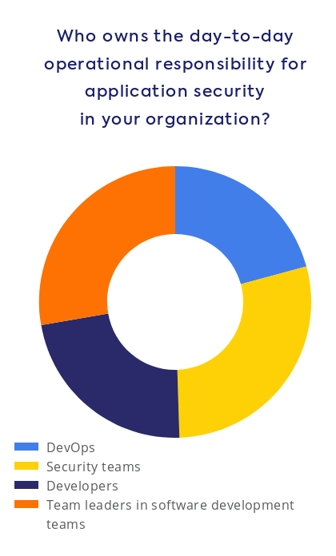

Yazılım Gündemi - 12
30 Eylül - 6 Ekim 2019
İçindekiler
- 1. Yaklaşık 10 milyon proje analiz edildi
- 2. .NET Core 3.1 sürümünde C++ desteği gelecek
- 3. İngiltere RESTful API standardı için OpenAPI 3 öneriyor
- 4. WhiteSource firması, uygulama güvenliği anketi sonuçlarını yayınladı
- 5. Etkinlik Duyurusu: Lifecycle of a Product with Scrum
- 6. Diğer Haberler
- 7. Lisans
< Önceki Gündem | 30 Eylül - 06 Ekim 2019 | Sonraki Gündem >
1 Yaklaşık 10 milyon proje analiz edildi
scc isimli kod satırı sayma ve karmaşıklık hesaplama aracının geliştiricisi Ben E.C. Boyter, sunucu yardımıyla yaklaşık 40TB büyüklüğündeki toplamda 10 milyon projeyi analiz etmiş ve detaylı bir blog yazısı hazırlamış. Go programlama dilini kullanarak $100 maliyetle (sanırım sunucu maliyeti) tüm bu işlemleri yapabilmiş. Projeleri indirmesi toplam 5 hafta sürmüş. Bazı sonuçlar ise bu şekilde:
- 9.985.051 toplam depo (repository),
- 9.100.083 en az bir dosya bulunan depo,
- 884.068 boş depo,
- 3.500.000.000 tüm depoların toplam dosya sayısı,
- 40.736.530.379.778 Byte (40TB) toplam işlenen veri,
- 1.086.723.618.560 toplam satırı,
- 816.822.273.469 toplam kod satırı,
- 124.382.152.510 toplam boş satır,
- 145.519.192.581 toplam yorum satırı.
Daha fazla istatistik ve ilginç veriler için mutlaka konu başlığına eklediğim bağlantıya tıklayın.
2 .NET Core 3.1 sürümünde C++ desteği gelecek
Aslında bu haber geçen haftanın konusu fakat .NET 3.0 duyulunca sanırım bu haber arkaplanda kalmış olacak ki konu başlığına eklediğim site de bunu 3 ekim tarihinde haber yapmış. Biliyorsunuz Microsoft çok uzun zamandır .NET Framework sistemi üzerinde duruyordu fakat yeni CEO Satya Nadella ile açık kaynak dünyasına girmeye yönelik birçok adım attı Microsoft ve Visual Studio Code ve .NET Core gibi projelere imza attı. .NET Core, .NET Framework olarak birliğimiz uygulama çatısının açık kaynak ve platformlar arası (cross-platform) hale gelmiş sürümü diyebiliriz. Bu sayede .NET ekosistemi hem açık kaynak camiasında bir topluluk oluşturdu hem de GNU/Linux dağıtımları ve Mac sistemlerde .NET uygulaması geliştirme imkanı doğdu. Bu sefer de Microsoft bloglarında yayınladıkları bir yazı ile .NET Core 3.1 sürümünde C++ ile Windows uygulaması geliştirme desteğinin geleceğini duyurdu. Windows uygulaması olduğu için haliyle GNU/Linux ve Mac sistemlerde bu özellikten faydalanılamayacak olsa da ileride tüm uygulamalar için de C++ desteği gelebilir. Bakalım süreç nasıl ilerleyecek.
3 İngiltere RESTful API standardı için OpenAPI 3 öneriyor
Açık kaynak artık öyle bir noktaya geldi ki, artık devletler bile bu ekosisteme katkı vermeye başladı. İngiltere'de birkaç yıldır bu akıma ayak uyduran ülkelerden birisi, hatta yanlış hatırlamıyorsam bu akımı başlatan ülke bile olabilir. İngiltere'nin ilgili kurumunun içerisindeki Açık Standartlar Kurulu'da (Open Standards Boards), devlet içerisindeki geliştirmelerde kullanılacak standartları belirlemeye çalışıyor. Kurulun GitHub üzerindeki deposuna gönderilen "API tanımlamaları için OpenAPI kullanalım" konulu öneri de kurul tarafından tartışılmış ve kabul edilmiş. OpenAPI ise, RESTful API geliştirmelerinde sistemin yapısını kurarken baz alınabilecek çeşitli tanımlamaları ve kuralları olan bir standart. Artık İngiltere'de devlet tarafından önerilen bir standart oldu.
Böyle şeyler gördükçe insan imreniyor tabii.
4 WhiteSource firması, uygulama güvenliği anketi sonuçlarını yayınladı
WhiteSource isimli güvenlik firmasının yaklaşık 600 geliştirici ile yaptığı uygulama güvenliği anketinin sonuçlardan bir kısım şu şekilde:
4.1 Şirketinizde uygulama güvenliğinden kim(ler) sorumlu?

Pastadaki en büyük pay %29 ile güvenlik takımları almış. Açıkcası bir geliştirici olarak güvenlik konuları için artık özel takımlar oluşturulması beni mutlu etti. Elbette geliştiriciler olarak yazdığımız kodlardaki güvenlik açıklarından sorumluyuz fakat bunların tespiti için ayrı bir takım gerekli bence. Öbür türlü üzerimizde çok fazla yük bindiriliyormuş gibi hissediyorum.
4.2 Şirket büyüklerine göre güvenlikten kim(ler) sorumlu
Anketin diğer sonuçları için mutlaka konu başlığına eklediğim bağlantıya tıklayın. Uygulama ve dolayısıyla verilerin güvenliği günümüzde önemi hızla artan konulardan birisi.
5 Etkinlik Duyurusu: Lifecycle of a Product with Scrum
6 Diğer Haberler
- TypeScript 3.7 Beta sürecine girdi.
- Xilinx firması, gömülü sistem programcıları için yeni bir uygulama platformu duyurdu: Vitis. Alternatif
- Google Cloud Platform takımı yeni bir Kubernetes aracı duyurdu: flink-on-k8n-operator.
- Google, Linux çekirdeğine katkı olarak üzerinde çalıştığı sanitizer projesini açık kaynak yaptı: Kernel Concurrency Sanitizer (KCSAN)
- Linux'deki yeni bellek kontrolcüsü RAM tasarrufu sağlıyormuş.
- Go ile yazılmış web sunucusu caddy tüm projelerini açık kaynak lisanslara geçirmeyi planlıyor.
- Derin öğrenme yöntemleri sayesinde hayvanların davranışlarını inceleyen yeni açık kaynak araçlar geliştiriliyormuş.
- Makine öğrenmesi ve veri bilimiyle uğraşanlar için yeni bir uygulama çatısı (freamework) duyuruldu: Streamlit. GitHub Deposu.
- Makine öğrenmesi uygulamalarında sıkça kullanılan Python kütüphanesi Tensorflow 2.0.0 sürümü duyuruldu.
- 3.parti GitHub mobil uygulaması GitTouch 1.1.0 sürümünü çıkardı. Apple Market, Google Play.
- PostgreSQL 12 sürümü yayınlandı.
- SQLite veritabanının 3.30.0 sürümünü duyuruldu.
- Zig programlama dilinin 0.5.0 sürümü duyuruldu.
- Lua programlama dilinin 5.4.0 sürümü duyuruldu.
- Inko programlama dilinin Eylül ayı durum raporu yayınlandı.
- NextJS, 9.0.7 sürümü çıktı.
- API Platform 2.5 sürümü çıktı.
- Rust kütüphanesi
static-assertionsilk stabil sürümü 1.0.0'ı duyurdu.
7 Lisans

Yazılım Gündemi - 12 yazısı Eren Hatırnaz tarafından Creative Commons Atıf-GayriTicari-AynıLisanslaPaylaş 4.0 Uluslararası Lisansı (CC BY-NC-SA 4.0) ile lisanslanmıştır.